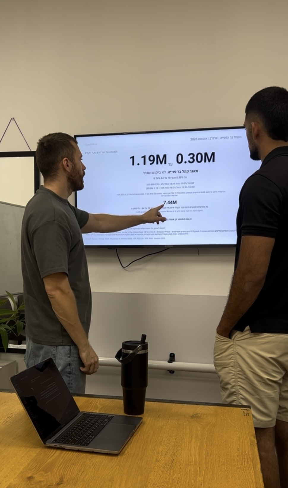
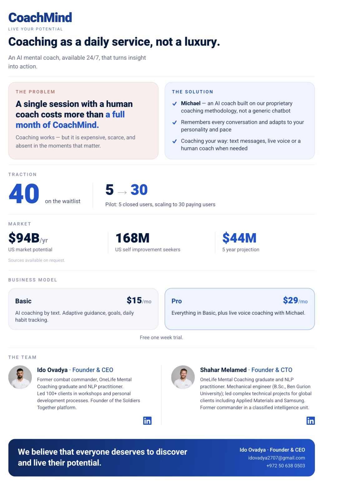

2025 - 2026
CoachMind | כשאימון מנטלי פגש AI
ב־CoachMind חיברתי בין שני עולמות שמעסיקים אותי: אימון מנטלי וטכנולוגיה. גייסתי CTO, שני מאמנים בכירים ושלושה יועצים, וניהלתי את העבודה על המוצר. לאורך הדרך קיימתי יותר מ־100 פגישות עם קהל היעד, ביצעתי שלושה סבבי ולידציה והובלתי פיילוט עם עשרה משתמשים.
הבדיקות הראו לי שהמוצר נשאר בגדר Nice to Have ולא פתר בעיה משמעותית מספיק. בחרתי לסגור את המיזם, ולקחתי ממנו הבנה עמוקה יותר של איך לבצע ולידציה אמיתית, ודרכה לזהות את הבעיה של קהל היעד.